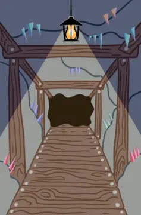
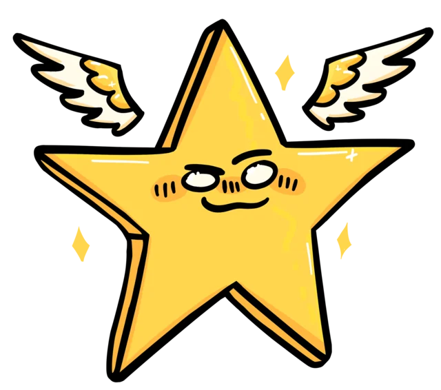

Ball is God?! Putar menara. Menjadi kesan.
Arked keturunan menegak tegar di mana seretan mendatar memutarkan menara di sekeliling Espa yang jatuh. Langkau pendaratan selamat, caj kombo smash dan pecahkan dunia mitos di mana satu pukulan tanpa kawalan menamatkan larian.
Pengeluaran aktif: sepuluh babak lokasi, bos, dialog bercabang dan laluan karma yang mengubah peraturan permainan.
Putarseret menara di sekeliling Espa
Risikolangkau tiga pendaratan selamat
Hancurkanmenembusi platform
Di dalam binaan semasa
Karma berubah lebih daripada dialog.
Laluan karma cerah, neutral dan gelap mengubah tingkah laku perisai, isyarat amaran, keagresifan musuh dan fasa bos, jadi cerita mengubah cara anda bermain.
Status binaan Pengeluaran aktifKesemua sepuluh dunia dialog
Latar belakang dialog untuk kesemua sepuluh dunia, mengikut urutan turun dari Ena hingga Deka.




UI pengeluaran semasa
Pemilihan tahap, dialog dan skrin keputusan dalam binaan semasa.
Ini aliran semasa mengikut urutan yang akan anda temui: pemilihan tahap, dialog, pilihan penting, kemudian kemenangan atau skrin kekalahan yang berasingan. Setiap visual di bawah menggunakan seni daripada projek Unity pengeluaran.
Laluan cakerawala memilih tahap yang dijana merentas sepuluh bab 100 peringkat.
Menu pengeluaran memetakan sepuluh lokasi dalam bab 100 peringkat dan dibuka terus ke larian yang dipilih.

 201
201Dialog berlaku di dalam lokasi.
Potret watak, seni lokasi dan plat nama penutur berkongsi satu bingkai menegak.


Shash
Teruskan, kemudian - tetapi jangan fikir ia akan mudah. Tria menanti anda yang akan menjadikan segala-galanya sebelum ini kelihatan seperti perkara kecil semata-mata.
04 / Pilihan pencapaian
Jawapan menjadi sebahagian daripada keturunan.
Di peringkat tempatan 90 dan 100, panel berdedikasi meminta keputusan ganti atau bunuh sebelum dialog menyelesaikan larian.

Ampunkan
Bunuh
05 / Menu hasil
Kemenangan berterusan. Kekalahan kembali kepada cabaran yang sama.
Binaan semasa mempunyai dua keadaan hasil yang berasingan: PanelWin menawarkan main semula dan tahap seterusnya, manakala PanelOver mengekalkan satu tindakan main semula yang jelas.
Kemenangan · PanelWin
Penurunan selesai
 Main semula
Seterusnya
Main semula
Seterusnya
Main semula
Seterusnya
Watak dialog
Muka bertemu semasa turun.
Kesemua 25 aksara dengan pasangan potret terbuka dan tertutup pengeluaran yang sah disertakan di bawah. Tuding atau fokus kad untuk menukar ungkapan.





Gambaran keseluruhan permainan
Ball is God?! ialah permainan arked yang mencabar tentang jatuh menembusi menara yang berputar.
Idea
Pandu Espa menuruni menara ilahi. Satu kesilapan boleh menamatkan pusingan, dan pilihan besar anda mengubah cara dunia berfungsi.
Binaan semasa
Sepuluh adegan lokasi, penjanaan menara prosedur, kombo smash, perisai leret, konfigurasi bos, dialog cawangan, menu pengeluaran dan potret sedia ekspresi dilaksanakan.
Khalayak
Pemain yang menyukai permainan arked mudah alih yang sukar, masa risiko-dan-ganjaran dan bos, dengan cerita untuk diikuti.
Status
Pengeluaran aktif. Kerja terkini merangkumi sistem runtime, seni dunia, ujian dan cara permainan dimainkan pada telefon.
Ciri-ciri
Apa yang anda lakukan dalam Ball is God?!
Turun dengan menyeret untuk memutar
Seretan mendatar memutarkan menara di sekeliling Espa yang tumbang secara automatik, membariskan jurang, bahaya dan platform selamat.
Tekanan arked tegar
Satu pukulan tanpa perlindungan menamatkan pusingan, jadi anda perlu membaca menara dan menentukan masa setiap pergerakan.
Bos dan dunia mitos
Sepuluh babak lokasi, masing-masing dengan bos tersendiri, membawa cerita dari satu dunia ke dunia seterusnya.
Pilihan yang mengubah peraturan
Dialog perubahan belas kasihan, kekerasan dan karma, peraturan perisai, pencerobohan musuh, telegraf dan fasa bos.
Gelung permainan
Cara bermain Ball is God?!
- Langkah 01Baca laluan turun
Imbas pelantar, jurang dan bahaya seterusnya serta cari ruang masa yang selamat semasa anda jatuh.
- Langkah 02Putar menara
Seretan mendatar memusingkan dunia Espa, menjajarkan platform selamat atau jurang yang disengajakan.
- Langkah 03Risiko dan hancurkan
Langkau tiga platform untuk mengecas smash kombo, kemudian pecah melalui struktur sementara perisai menutup satu kesilapan maut.
- Langkah 04Pilih akibatnya
Belas kasihan dan paksaan membentuk karma, dialog dan peraturan permainan yang dibawa ke dalam musuh dan bos.
Kisah / dunia
Menara mitos tempat setiap pilihan anda mengikut anda turun.
Ball is God?! bermula dari ketertarikan zaman kanak-kanak dengan arked turun tegak mudah alih: jurang membaca, bertindak balas dengan cepat dan bertahan mengikut naluri.
Format ini boleh memuatkan lebih banyak: bos, watak yang berperibadi, cerita dan ketegangan moral. Projek semasa mengikuti Espa melalui sepuluh babak lokasi dan sekumpulan watak yang pelik, dengan pilihan yang mengubah cerita dan permainan.
Maka matlamatnya menjadi arked turun menegak yang ringkas dengan tekanan pertarungan bos dan akibat RPG yang dipacu cerita.
- Visi
- Arked menara berputar dengan kisah mitos
- Skop dunia semasa
- Sepuluh lokasi dan konfigurasi bos
- Peringkat cerita
- Lengkapkan draf cerita dalam bentuk panjang
- Keadaan pengeluaran
- Pengeluaran aktif
Sekilas pandang
Kawalan seret yang mudah, dengan cerita yang mengubah peraturan.
Kawalan seret-untuk-putar bertindak balas serta-merta. Selebihnya datang daripada dunia mitos, bos dan pilihan yang mengubah permainan.
Binaan semasa sudah menggabungkan penjanaan menara deterministik, smash risiko-dan-ganjaran, kegagalan sekali pukul, bos, dialog bercabang dan karma yang mengubah permainan.
- Genre
- Arked turun menegak dipacu cerita
- Sasaran platform
- iOS / Android
- Bentuk sesi
- Sesi pantas berasaskan kemahiran
- Studio
- WillowinWorlds
Muat turun aset
Ball is God?! akhbar dan aset pencipta
Pratonton WebP untuk liputan akhbar, semakan penerbit dan rujukan halaman kedai. Fail sumber beresolusi penuh tersedia atas permintaan.
Jenama dan watak
Ikon permainan ditambah kesemua 25 aksara semasa yang mempunyai potret dialog pengeluaran yang lengkap. Nama sepadan dengan kunci penyetempatan Unity.
EspaPotret watak pemain.
RevlaPotret dialog pengeluaran.
ShashPotret dialog pengeluaran.
ShushPotret dialog pengeluaran.
ShishPotret dialog pengeluaran.
GigoPotret dialog pengeluaran.
GogaPotret dialog pengeluaran.
GigaPotret dialog pengeluaran.
AskoldPotret dialog pengeluaran.
MirasPotret dialog pengeluaran.
HihPotret dialog pengeluaran.
HehPotret dialog pengeluaran.
HahPotret dialog pengeluaran.
MusyaPotret dialog pengeluaran.
DusyaPotret dialog pengeluaran.
SusyaPotret dialog pengeluaran.
VladusPotret dialog pengeluaran.
FrishaPotret dialog pengeluaran.
LurenPotret dialog pengeluaran.
KurenPotret dialog pengeluaran.
Don YagonPotret dialog pengeluaran.
LuryaPotret dialog pengeluaran.
KhleyaPotret dialog pengeluaran.
VaronPotret dialog pengeluaran.
WhitePotret dialog pengeluaran.
Latar belakang menu
Karya seni pengeluaran semasa yang digunakan oleh sistem pemilihan aras cakerawala.
 Menu cakerawala
Menu cakerawalaDunia turun menegak
Set lengkap sepuluh latar belakang lokasi semasa, dipesan daripada Ena kepada Deka.
 01 · Dunia langitLatar belakang turun menegak Ena.
01 · Dunia langitLatar belakang turun menegak Ena.
 02 · Dunia angkasaLatar belakang turun menegak Dyo.
02 · Dunia angkasaLatar belakang turun menegak Dyo.
 03 · Dunia ributLatar belakang turun menegak Tria.
03 · Dunia ributLatar belakang turun menegak Tria.
 04 · Dunia saljiLatar belakang turun menegak Tessera.
04 · Dunia saljiLatar belakang turun menegak Tessera.
 05 · Dunia gunung berapiLatar belakang Pente; beranimasi dalam permainan.
05 · Dunia gunung berapiLatar belakang Pente; beranimasi dalam permainan.
 06 · Dunia lautanLatar belakang turun menegak Eksi.
06 · Dunia lautanLatar belakang turun menegak Eksi.
 07 · Dunia padang pasirLatar belakang turun menegak Epta.
07 · Dunia padang pasirLatar belakang turun menegak Epta.
 08 · Dunia hutanLatar belakang turun menegak Ohto.
08 · Dunia hutanLatar belakang turun menegak Ohto.
 09 · Dunia guaLatar belakang turun menegak Ennea.
09 · Dunia guaLatar belakang turun menegak Ennea.
 10 · Dunia nerakaLatar belakang turun menegak Deka.
10 · Dunia nerakaLatar belakang turun menegak Deka.
Latar belakang arked cerita
Set lokasi dialog lengkap: Dewan Cahaya serta latar belakang untuk semua sepuluh dunia.
 00 · Dewan CahayaLatar belakang dialog pembukaan.
00 · Dewan CahayaLatar belakang dialog pembukaan.
 01 · Dialog langitLatar belakang cerita Ena.
01 · Dialog langitLatar belakang cerita Ena.
 02 · Dialog angkasaLatar belakang cerita Dyo.
02 · Dialog angkasaLatar belakang cerita Dyo.
 03 · Dialog ributLatar belakang cerita Tria.
03 · Dialog ributLatar belakang cerita Tria.
 04 · Dialog saljiLatar belakang cerita Tessera.
04 · Dialog saljiLatar belakang cerita Tessera.
 05 · Dialog gunung berapiLatar belakang cerita Pente.
05 · Dialog gunung berapiLatar belakang cerita Pente.
 06 · Dialog lautanLatar belakang cerita Eksi.
06 · Dialog lautanLatar belakang cerita Eksi.
 07 · Dialog padang pasirLatar belakang cerita Epta.
07 · Dialog padang pasirLatar belakang cerita Epta.
 08 · Dialog hutanLatar belakang cerita Ohto.
09 · Dialog guaLatar belakang cerita Ennea.
08 · Dialog hutanLatar belakang cerita Ohto.
09 · Dialog guaLatar belakang cerita Ennea.

 10 · Dialog nerakaLatar belakang cerita Deka.
10 · Dialog nerakaLatar belakang cerita Deka.
Soalan Lazim Ball is God?!
Soalan lazim tentang Ball is God?!
Apakah jenis permainan Ball is God?!
Arked turun menegak yang mencabar. Anda memutar menara di sekeliling Espa yang sedang jatuh, melangkau pendaratan selamat untuk mengecas smash dan menembusi dunia mitos.
Bagaimana cara bermain Ball is God?!
Seret secara mendatar untuk memutarkan menara, langkau tiga platform untuk mengecas smash dan leret secara menegak apabila perisai cooldown mesti menyerap pukulan maut.
Adakah Ball is God?! sudah dikeluarkan?
Belum. Ia sedang aktif dalam pengeluaran merangkumi sistem runtime, seni dunia, kandungan cerita dan ujian. Belum ada tarikh keluaran awam. Platform sasaran ialah iOS dan Android.
Apakah yang menjadikan Ball is God?! berbeza?
Ia menggabungkan tekanan arked risiko-dan-ganjaran dengan sepuluh lokasi serta karma yang mengubah dialog, musuh, isyarat serangan, perisai dan bos.
Siapa yang menghasilkan Ball is God?!
WillowinWorlds, sebuah studio bebas yang menghasilkan permainan teka-teki dan arked untuk telefon mudah alih.
Bolehkah saya menggunakan aset akhbar untuk Ball is God?!
Boleh, untuk akhbar, semakan penerbit dan rujukan kedai. Fail sumber kekal persendirian melainkan anda memintanya daripada kami.
Ball is God?! Devlog
Apa yang berubah dan bila
- Permukaan dunia dan pengesahan bahaya
Persembahan watak, penjanaan deterministik dan bahaya duri menjalani satu pusingan baik pulih visual dan pengesahan sekali gus.
- Julai 2026Pemantapan UI pengeluaran dan watak
Pemilihan tahap, kawalan tindakan kongsi, bingkai dialog menegak dan ekspresi watak berpasangan kini sudah ada.
- Februari 2026Semakan skop projek
Pasukan menyelesaikan pas penyepaduan cerita utama dan menyemak skala penuh projek: sepuluh dunia, pilihan moral, bos dan pelbagai kesudahan.
- April-Mei 2025Penulisan semula cerita dan kebolehan
Cerita penuh telah ditulis semula, kebolehan watak dipertingkatkan dan akibat moral menjadi lebih jelas.
- Ogos 2024Arah cerita bermula
Pasukan memutuskan Ball is God?! harus lebih daripada sekadar arked penurunan yang ringkas, lalu menambah cerita mitos dan visi pilihan moral.
- Julai 2024Konsep asal
Projek ini bermula sebagai idea permainan pertama studio: permainan arked menegak yang pantas tentang jatuh menembusi menara ilahi.
- Binaan semasaArked dan cerita dalam satu build
Penurunan menara berputar, smash kombo, perisai leret, bos, dialog dan karma kini berfungsi bersama dalam satu binaan.